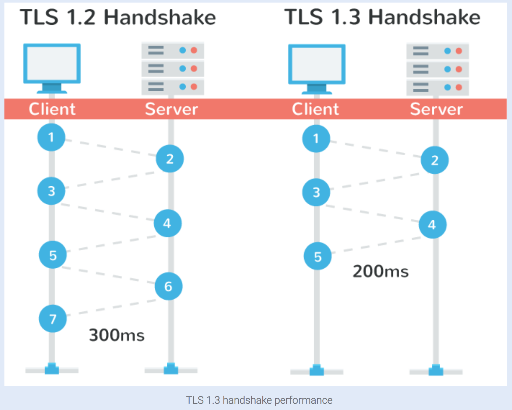

Differences between TLS 1.2 and TLS 1.3
The current version of TLS, TLS 1.2, was defined in RFC 5246 and has been in use for the past eight years by the majority of all web browsers. Companies such as Cloudflare are already making TLS 1.3 available to their customers.
With the release of TLS 1.3, there are promises of enhanced security and speed. But how exactly do the changes from TLS 1.2 to TLS 1.3 cause these improvements? The following is a list of differences between TLS 1.2 and 1.3 that shows how the improvements are achieved.
This protocol was defined in an Internet Draft in April of 2017. TLS 1.3 contains improved security and speed. The major differences include:
• The list of supported symmetric algorithms has been pruned of all legacy algorithms. The remaining algorithms all use Authenticated Encryption with Associated Data (AEAD) algorithms.
• A zero-RTT (0-RTT) mode was added, saving a round-trip at connection setup for some application data at the cost of certain security properties.
• All handshake messages after the ServerHello are now encrypted.
• Key derivation functions have been re-designed, with the HMAC-based Extract-and-Expand Key Derivation Function (HKDF) being used as a primitive.
• The handshake state machine has been restructured to be more consistent and remove superfluous messages.
• ECC is now in the base spec and includes new signature algorithms. Point format negotiation has been removed in favor of single point format for each curve.
• Compression, custom DHE groups, and DSA have been removed, RSA padding now uses PSS.
• TLS 1.2 version negotiation verification mechanism was deprecated in favor of a version list in an extension.
• Session resumption with and without server-side state and the PSK-based ciphersuites of earlier versions of TLS have been replaced by a single new PSK exchange.
In short, the major benefits of TLS 1.3 vs that of TLS 1.2 is faster speeds and improved security.
Speed Benefits of TLS 1.3
TLS and encrypted connections have always added a slight overhead when it comes to web performance. HTTP/2 definitely helped with this problem, but TLS 1.3 helps speed up encrypted connections even more. To put it simply, with TLS 1.2, two round-trips have been needed to complete the TLS handshake. With 1.3, it requires only one round-trip, which in turn cuts the encryption latency in half. This helps those encrypted connections feel just a little bit snappier than before.

Another advantage of is that in a sense, on sites you have previously visited, you can now send data on the first message to the server. This is called a “zero round trip.” (0-RTT). And yes, this also results in improved load time times.
Improved Security With TLS 1.3
A big problem with TLS 1.2 is that it’s often not configured properly it leaves websites vulnerable to attacks. TLS 1.3 now removes obsolete and insecure features from TLS 1.2, including the following:
- SHA-1
- RC4
- DES
- 3DES
- AES-CBC
- MD5
- Arbitrary Diffie-Hellman groups — CVE-2016-0701
- EXPORT-strength ciphers – Responsible for FREAK and LogJam
Because the protocol is in a sense more simplified, this make it less likely for administrators and developers to misconfigure the protocol.
Sending raw Ethernet packets from a specific interface in C on Linux
Lately I’ve been writing some code to send packets to a specific MAC address from a specific interface. I’m sure this will come in handy again so here is how it goes:
Includes
#include <netinet/in.h>
#include <sys/socket.h>
#include <arpa/inet.h>
#include <net/if.h>
#include <netinet/ip.h>
#include <netinet/udp.h>
#include <netinet/ether.h>
#include <linux/if_packet.h>
Open the raw socket:
int sockfd;
...
/* Open RAW socket to send on */
if ((sockfd = socket(AF_PACKET, SOCK_RAW, IPPROTO_RAW)) == -1) {
perror("socket");
}
Get the index of the interface to send on:
struct ifreq if_idx;
...
memset(&if_idx, 0, sizeof(struct ifreq));
strncpy(if_idx.ifr_name, "eth0", IFNAMSIZ-1);
if (ioctl(sock, SIOCGIFINDEX, &if_idx) < 0)
perror("SIOCGIFINDEX");
Get the MAC address of the interface to send on:
struct ifreq if_mac;
...
memset(&if_mac, 0, sizeof(struct ifreq));
strncpy(if_mac.ifr_name, "eth0", IFNAMSIZ-1);
if (ioctl(sock, SIOCGIFHWADDR, &if_mac) < 0)
perror("SIOCGIFHWADDR");
Get the IP address of the interface to send on:
struct ifreq if_ip;
...
memset(&if_ip, 0, sizeof(struct ifreq));
strncpy(if_ip.ifr_name, "eth0", IFNAMSIZ-1);
if (ioctl(sock, SIOCGIFADDR, &if_ip) < 0)
perror("SIOCGIFADDR");
Construct the Ethernet header:
int tx_len = 0;
char sendbuf[1024];
struct ether_header *eh = (struct ether_header *) sendbuf;
...
memset(sendbuf, 0, 1024);
/* Ethernet header */
eh->ether_shost[0] = ((uint8_t *)&if_mac.ifr_hwaddr.sa_data)[0];
eh->ether_shost[1] = ((uint8_t *)&if_mac.ifr_hwaddr.sa_data)[1];
eh->ether_shost[2] = ((uint8_t *)&if_mac.ifr_hwaddr.sa_data)[2];
eh->ether_shost[3] = ((uint8_t *)&if_mac.ifr_hwaddr.sa_data)[3];
eh->ether_shost[4] = ((uint8_t *)&if_mac.ifr_hwaddr.sa_data)[4];
eh->ether_shost[5] = ((uint8_t *)&if_mac.ifr_hwaddr.sa_data)[5];
eh->ether_dhost[0] = MY_DEST_MAC0;
eh->ether_dhost[1] = MY_DEST_MAC1;
eh->ether_dhost[2] = MY_DEST_MAC2;
eh->ether_dhost[3] = MY_DEST_MAC3;
eh->ether_dhost[4] = MY_DEST_MAC4;
eh->ether_dhost[5] = MY_DEST_MAC5;
eh->ether_type = htons(ETH_P_IP);
tx_len += sizeof(struct ether_header);
Construct the IP header:
struct iphdr *iph = (struct iphdr *) (sendbuf + sizeof(struct ether_header));
...
/* IP Header */
iph->ihl = 5;
iph->version = 4;
iph->tos = 16; // Low delay
iph->id = htons(54321);
iph->ttl = ttl; // hops
iph->protocol = 17; // UDP
/* Source IP address, can be spoofed */
iph->saddr = inet_addr(inet_ntoa(((struct sockaddr_in *)&if_ip.ifr_addr)->sin_addr));
// iph->saddr = inet_addr("192.168.0.112");
/* Destination IP address */
iph->daddr = inet_addr("192.168.0.111");
tx_len += sizeof(struct iphdr);
Construct the UDP header:
struct udphdr *udph = (struct udphdr *) (sendbuf + sizeof(struct iphdr) + sizeof(struct ether_header));
...
/* UDP Header */
udph->source = htons(3423);
udph->dest = htons(5342);
udph->check = 0; // skip
tx_len += sizeof(struct udphdr);
Fill in UDP payload:
/* Packet data */
sendbuf[tx_len++] = 0xde;
sendbuf[tx_len++] = 0xad;
sendbuf[tx_len++] = 0xbe;
sendbuf[tx_len++] = 0xef;
Fill in remaining header info:
unsigned short csum(unsigned short *buf, int nwords)
{
unsigned long sum;
for(sum=0; nwords>0; nwords--)
sum += *buf++;
sum = (sum >> 16) + (sum &0xffff);
sum += (sum >> 16);
return (unsigned short)(~sum);
}
...
/* Length of UDP payload and header */
udph->len = htons(tx_len - sizeof(struct ether_header) - sizeof(struct iphdr));
/* Length of IP payload and header */
iph->tot_len = htons(tx_len - sizeof(struct ether_header));
/* Calculate IP checksum on completed header */
iph->check = csum((unsigned short *)(sendbuf+sizeof(struct ether_header)), sizeof(struct iphdr)/2);
Send the raw Ethernet packet:
/* Destination address */
struct sockaddr_ll socket_address;
...
/* Index of the network device */
socket_address.sll_ifindex = if_idx.ifr_ifindex;
/* Address length*/
socket_address.sll_halen = ETH_ALEN;
/* Destination MAC */
socket_address.sll_addr[0] = MY_DEST_MAC0;
socket_address.sll_addr[1] = MY_DEST_MAC1;
socket_address.sll_addr[2] = MY_DEST_MAC2;
socket_address.sll_addr[3] = MY_DEST_MAC3;
socket_address.sll_addr[4] = MY_DEST_MAC4;
socket_address.sll_addr[5] = MY_DEST_MAC5;
/* Send packet */
if (sendto(sock, sendbuf, tx_len, 0, (struct sockaddr*)&socket_address, sizeof(struct sockaddr_ll)) < 0)
printf("Send failed\n");
Code available here
Copyright © 2017 Hosted by Amazon Web Service